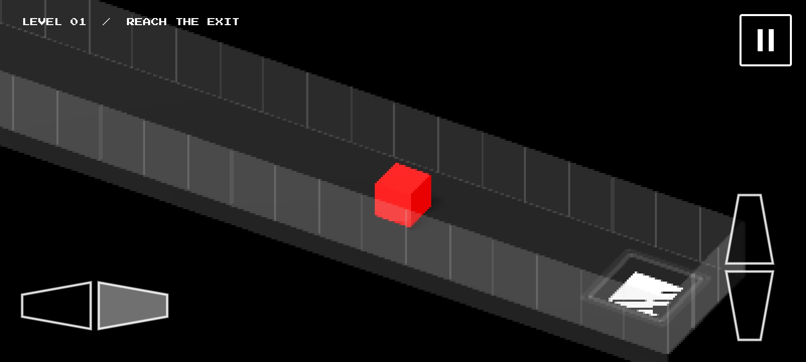

01 / Play
Think, then move
Push blocks, read the room, and plan a route. The puzzles reward observation and experimentation over quick reflexes.
A small world. A different way through.
Boxed is a minimalist pixel-art puzzle-platformer about moving carefully, noticing the details, and finding your own way to the exit.
An independent game in development for PC and mobile.

The idea
01 / Play
Push blocks, read the room, and plan a route. The puzzles reward observation and experimentation over quick reflexes.
02 / Look
High-contrast pixel art keeps each room legible. A restrained palette puts the focus on the puzzle, not the noise.
03 / Go
Boxed is being developed with both PC and mobile play in mind. Platform details and release timing are still in progress.
Dev journal / current focus
The work starts with clear, consistent puzzle rules: how blocks move, how switches respond, and what makes a solution feel earned. The journal shares the direction, decisions, and next steps as the game takes shape.